Rustic Furniture
Build your own outdoor furniture with planks and twigs.
By John Vivian
December/January 1994
I was fortunate enough to spend grade school summer vacations at my grandparent's turn-of-the-century cottage on the shore of a north country lake. On warm, sunny days the old place really hummed; younger cousins splashed and shrieked in the shallows, older ones buzzed around in the boats, aunts chased toddlers, and un cles fidgeted till 4:00 P.M. and happy hour.
As I got older, I'd walk the shore path north to where it disappeared into the quiet and cool of the evergreen woods, narrowed to a pine-needled rut of an Indian trail and wound up a steep hill, carrying a pilgrim a century and more back in time.
At the top of the hill-half-hidden in a hemlock grove-was a collection of little-used hunting cabins that dated from the lake's earliest resort days. Out front, the hill dropped off sharply and a narrow stairway zigzagged down to a lakeside gazebo that held a clutter of chairs, settees, and tables.
All of it-cabins, stairs, railings, gazebo, and furniture-was fashioned from whole and split logs, rough-hewn planks, and saplings-some bare, some with bark, some straight, others featuring crooks and twists, burls, snags, and gnarls.
To a 10-year-old, it all seemed to have grown from the woods the way a mushroom pushes up from the forest floor, gleaming white under a cap of pine needles and loam-distinct, yet still a part of it. The gazebo's roof was thick with lichen and moss and the rough plank floor was littered with squirrel-hollowed nutshells and clamshells left by raccoons. In the center, a gnarled and knot-holed log reached to the roof peak. Around the perimeter were more whole-log supports, each with two opposing branches growing out from the trunk at just the right angles to support the eaves poles.
Which Is the Real Adirondack Chair?
To most of us, an Adirondack chair is a big, angular, laid-back lawn chair made of flatboards that you see around waterside resorts and in unpainted-furniture outlets. They are easy to make, and plans are featured frequently by woodworking magazines. The design is more properly a product of western Vermont than upstate NewYork and better suited to Lake Champlain-side lawns than the Great Cottages in the Adirondack uplands. To make some, get the book Building Adirondack Furniture; see Sources at the end of this article. Another variety often called "Adirondack" is more properly "pole furniture" as it is made of round fence poles with ends of the horizontal members peeled down to tenons that fit into round mortise holes in the verticals much like a westernstyle rail fence. Making it (most commonly from secondgrowth Canadian white cedar) requires really big debarking skinners, tenoners, and mortising machines and is more properly a modern industrial product than handmade rustic.
The furniture looked as though the woods had designed it. Chair frames were saplings with branches braided to make backrests. A settee was fashioned out of a section of huge wild grapevine that arched in the middle to frame the back. Each end bent down and out abruptly, jutting forward to form the arms. A little side table veneered in birch bark had a cross rung made from a tree branch growing through a paper wasps' nest. Y-bends, twists, gnarls, and knots in the materials hadn't been cut out or planed smooth but were left in-celebrated, even!
Old-Fashioned Stuff
I tried to build a table and chair of my own, but I wasn't old enough to use the good tools and- got no help or encouragement from my elders. I'd seen a few newly made examples for sale at roadside stands. The local old-timers called it "shaky twig furniture" and made it over winter to sell to tourists. I begged the family to please, please get some for our place. They just sniffed: "Why, we threw that old-fashioned stuff out years before you were even born."
They were the World War II generation. Survivors. Winners. Optimists anticipating the second half of the 20th century free of war, famine, and disease, with universal prosperity fueled by cheap, clean atomic energy, where everything would be automated and made of plastic and trimmed in chrome. That winter they had the kitchen modernized, replacing the old sheet-zinc counters with Formica, the enameled-wood Eskimo icebox with a Frigidaire, and the splendid Crawford gas/wood kitchen range with a GE self-cleaning electric.
I stayed at home during the summers after that and returned but once, twenty years later. The old house sported a TV antenna. An oil furnace made the living room fireplace an ornament and there was approving talk of condos going in on the hill just up the shore path. But by then, I'd traded city life for a place in the country with zinc counters, an oak and brass icebox, and a wood-burning range. The homestead was largely furnished with rustic furniture I'd built of birch and maple saplings, sawmill slabs, river snags, and childhood memories.
A History in Twigs
Differences in the way successive generations feel toward rustic furniture reflect more than fashion or historical trends. It is a function of America's evolving attitude toward nature, the environment, and man's role in what we now call global ecology.
The World War II generation was perhaps the last to mirror the Europeans who colonized the New World-embodying the Late-Rennaissance ideal that man's God-given role was to improve on nature, to perfect the natural state. Their ideal was the city as perfected by the ancient Greeks and Romans-the well-ordered repository of all knowledge, culture, and Enlightment. Indeed, the very term "civilization" comes from the Latin word for "city." Life inside the city walls was "civil" and the world beyond the walls was abandoned to the wilderness and howling barbarism-to "uncivil" behavior and chaos.
In the New World, pioneers had to fight their way through a really uncivil wilderness that extended 3,000 miles to the Pacific. Every field, homesite, and road was contested by hostile Indians, wild animals, brutal weather, difficult terrain, and an ocean of trees. Indeed, a cabin, a log bedstead, or rustic chair offered a way to dispose of a few logs. The furniture they made was rustic, not by intent but of necessity, made with primitive tools under primitive conditions. Made not by cabinetmakers but by the people who used it and hewn from the forest that was at once their primary adversary and the provider of food, housing materials, heating fuel, and livelihood.
Bench ends are laid out as mirror images on a grid. Half-lap joints are notched with a bow saw, making all square, level,
and plumb.
Rails and braces are power-screwed to each end and redwood seat slats are carefully nailed on.
An early deal table and benches or a woven rush-seat chair is four-square, undecorated, and utilitarian. What embellishment peeks through is grudging-a knot enlivening the surface of a handplaned sideboard was endured as an intrusion of imperfect nature on the work of man. If it was not filed down to a civil smoothness, it was not from lack of will but because the time, energy, or tools were lacking. And when the homestead was established and crops were paying off, the good folks sent off for factory-made bedsteads, chairs, and tables and relegated the old rustic furniture to the barn loft.
The crude furniture of saplings, twigs, and bark that embody "the rustic tradition" did not originate with rustic people who yearned for the accoutrements of civilization but became a fashion with urbanites who had never experienced the hard freedoms of life on the frontier-civilized urbanites longing for wildness and rustic virtue.
Evolution of the Rustic Tradition
By the late 1700s, the frontier was but a memory, many generations past for America's affluent urban elite. But, like city people before them, they enlivened their townhouses with walled gardens-endosing, "civilizing;" and ordering nature. They mimicked European Gothic style: gardens with grottoes and "follies" furnished with rustic furniture featuring burls and snags that must have evoked grandmother's tales about the hazards of a walk in the woods inhabited by bears, wolves, and hostile Indians. The 18th century brought the "Enlightment" that condemned the corruption of city life and idealized nature-best exemplified by J.J. Rousseau's "Noble Savage" patterned after the Native American, uncorrupted by technology and city life, morally superior beings living simply and harmoniously with nature (although by that time, the tribes were largely eradicated east of the Mississippi).
The relationship between man and nature in the wild was idealized further by the 19th Centruy Romanticism as personified by James Fenimore Cooper's fictional frontiersman Leatherstocking and popluarized by Horace Greeley-the newspaper editor who said, "Go West, young man."
WHOSE TRADITION? Twig furniture, in fact, was reborn in the gardens of the urban elite, who'd never experienced frontier life.
The Romantic Period back-to-nature movement produced agrarian/utopian communes and re-emerged in principle 100 years later (communes and all) among those who quit the city and went homesteading in the 1970s. One of our spiritual mentors was Romantic Period writer Henry Thoreau-whose own dropout year at Walden Pond can be seen as a Romantic putting Enlightment theory into practice. His handmade house, bed, table, and three chairs were rustic and utilitarian as any pioneer's. Of course, Henry's term of self-imposed hardship in the cleansing wilds endured for only one season, and it was done to make a philosophical point more than to live the life-some would say, to do book research.
By the late 1800s, the new industrial superrich heard the call of the wilderness and began escaping hot city summers first by taking camping trips into the Eastern wilderness; then by building 30-room vacation homes in mountain and lake country from the upper Midwest to the Shenandoah Valley and Adirondack Mountains. The style of architecture and furnishings that the Vanderbilts and Jay Gould had duplicated in their vacation retreats weren't ornate European copies to match their pre-in come tax "gilded age" (so named by Mark Twain). The new "dollar aristocracy" broadened the scope of the rustic style that had originated in China, came to America via English gardens, and was interpreted by society architect Frederick Law Olmstead in the pavilions and benches for Central Park, the "greensward" he designed for the middle of Manhattan Island.
Many 30-room "great cottages" were located a day or more away from any railroad terminal, so they had to be built from what was available-wilderness forest products. In a rustic elegance never equaled, the homes were built of logs with great porches and huge rock chimneys, all set into gem-like lake settings.
Making the rustic furniture to furnish the estates quickly became a genuine American primitive art form, as it was built in the winter by unschooled wilderness guides who interpreted Central Park settees, arbors, chairs, and pavilions using skills developed in building guide boats, hunting shelters, and (truly) rustic camp furniture.
At first, this "twig" furniture was crude and for outdoor use only, but it quickly became refined and was brought inside to a new room concept: the "den:" Guides combed the woods for unusually shaped branches. Over time, they bent, grafted, and deformed trees into intricate designs-including entire living chairs. A favorite theme was to adorn, say, a hat rack with a stuffed bear cub or another of the trophy animals the "resorters" murdered wholesale before President Theodore Roosevelt began to popularize the need for natural resource conservation with his initiation of the National Park System.
URBAN CHICFew of today's rusticfurniture makers arecountry people.
Copying the superrich, the not-so-rich and not-rich-at-all established resorts on lakes, the ocean, and in the mountains all across the country-until the Crash of 1929. Each resort region had developed its own style of rustic resort furniture by then and during the Great Depression of the 1930s, original Adirondack- style furniture (some sold by homeless itinerants and called gypsy-rustic) as well as Southern bent-willow and Indiana hickory-sapling furniture were made by out-of-work countrymen. Some is still made commercially today.
The Urban-Rustic Style
Arguably the most true-to-tradition modern interpretations of original Adirondack rustic designs are being made by big-city artisans who sell it as folk art to other city folks at prices that would make J.P. Morgan blink. I'm told there are rustic furniture boutiques on 5th Avenue in New York City-J.P would certainly approve.
Few of today's rustic furniture makers are country people. They hold degrees from art schools and live and work in town. Their writings reveal little knowledge of the woods or the outdoors-a deficit that is more than counterbalanced by a high-craft knowledge of woodworking and a literate creative sensibility to abstract design inherent in the wood. Instead of furniture featuring stuffed animals or great looming oak burls, you will see soaring, airy designs that are highly individual and at once traditional and contemporary-many exhibit ing a sense of humor, whimsy, and a playful flair for integrating form and function that no Adirondack guide could have imagined. I'd call it Post-Industrial Rustic Modern. Perhaps a little more modern than rustic. Surely postindustrial-what more stinging Generation X-style comment on a perceived decline of industry and commerce, end to affluence, and a reduced hope for the future than to resort to twigs to build high-fashion furniture? What a contrast with the post-WWII optimists and their plastic and chrome.
It All Comes Full Circle
Trends be or no, purely utilitarian rustic furniture has been made over the past 30 years by those of us (many holding art degrees of our own) who chose to quit the city and live in the country without realizing that we were perpetuating a utopian dream or rustic tradition. Rustic furniture for us was and is part of a rural lifestyle choice.
We were and are reacting in part to social, political, and economic forces larger than ourselves. But much of our motivation is a new attitude toward nature. It is based in part on disgust with city filth, crime, and corruption, but not at all due to fear, exploitation, or a mere search for novelty. Rather, we have developed a new appreciation of the (deteriorating) relationship between mankind and the planet.
We are the first to make rustic furniture to use in our own homes and lives, as the pioneers did. But we don't make it because we have no other choice. Nor because rustic is fashionable, or because we think it looks quaint in the garden, or because we get sentimental over trees-but because it speaks to us of wildness and we are the first generation in history to appreciate how mankind has destroyed the globe as we rushed to dominate and civilize it. We also acknowledge the need to preserve whatever vestiges of wildness we find, wherever we find it, and however we can: salmon in Oregon and redwoods in California, the Amazon rain forest, Arctic ice packs, the greensward in Central Park. Yes, and Furbish louseworts, snail darters, and the over-promoted-to-the-point-of-boredom damned humpback whales.
Perhaps, in time, history will give us a proper title like Enlightenment or Romantics. About all I hear these days is Tree-Hugger and Environmentalist Wacko. But that's another subject.
Building Your Own
So what style of rustic furniture would you like to build for your den, back porch, or lawn? Or your living room, bedroom, or study? I've set recycled flat-faced interior doors up on a rustic log frame, plugged the lock set holes, trimmed the edges with halfpoles for a dining room table, and made a set of flat-seated/flat-backed, loglegged chairs to match. I've glued down and spackled smooth the delaminated veneer on an ancient six-drawer sideboard from the dump and covered it with birch bark, half-split wild cherry, and yellow birch twigs. (I was later offered $2,500 for it and took it!) I've disguised stacked-brick and pine-plank bookcases with end piers of vertical sticks and scarfed grooves into horizontal sticks to slip over the fronts of the shelving as book-holding lips.
Over the decades I've made scores of end tables and coffee tables, chairs, couches, love seats, and picture frames. I've even made an eightfoot-tall hat rack from a red cedar pole after I found a four-point half-rack of deer antlers in the woods, though I've never even worn a felt hat. In deference to tradition, I set one of the kid's ratty old teddy bears in a sitting position, holding on with one paw and looking down quizzical-Pooh bear-like from an upper branch.
I also left six inches of most of the other branches. There were over 20 hangers sticking out and-set in a big washtub to catch the drippings-the stand made a great boot, mitten, and snowsuit drier for little kids.
If the daily news has you in a Gothic frame of mind, go timber-cruising for the rustic-grotesque and hark back to the earliest rustic period. Woody old lilac bushes are gnarled and contorted and most home owners are happy to let you cut them out (you'll rejuvenate the bushes). Roots of mountain laurel, rhododendron, and magnolia are naturally grotesque. Most established woodlands will contain exposed roots of wind-uprooted trees, trunks that are snow or storm broken and regrown crooked (usually at the baseoffering you natural table feet, settee arms; and mote) or deformed by burls and knots, plus the convoluted stems of wild grape and bittersweet vines that can be a foot thick at the base and describe marvelous loops and curves as they climb.
If you fancy more Enlightened, conventional looking furniture that is rustic made but not all that rustic looking, get some two-foot-thick chunks of dry, straightgrained, and good-splitting white oak. Take out your riving froe, shaving horse, draw knife, and your dog-eared copy of The Foxfire Book (the first and best in the series). Starting on p. 128, old-time Georgia mountaineer Lon Reid shows how to build a slat-backed chair from cedar splints using hand tools. Roy Underhill does the same from a different perspective in chapter 6 of The Woodwright's Shop (also the title of the TV-associated book series).
Gathering Wood
The best twig furniture is made from opportunistic young saplings that naturally take over any stretch of bare ground that isn't mowed or plowed twice a year. They are seldom desirable for man's purpose and they are redundant a thousand times for nature's. The land and sun space occupied by a single mature forest tree once hosted a thousand seedlings in a dozen speciesall eventually crowded or shaded out or poisoned. Once established, trees such as black walnut dose the soil with a natural herbicide to discourage competition.
The best location for hardwood saplings is a well-drained lot recently burned over or cleared but abandoned for several years. The newly-cleared land will be choked with a random variety of first-growth trees (poplar, aspen or alder, black cherry, the birches) growing close together, straight and easy to glean. An older woods will contain a scattering of young second- or terminalgrowth trees (maple, oak, evergreens), but sticks will not be as straight as they grow in full sun, often providing you with interesting crooks.
Softwoods including the excellent furniture trees, red and white cedar grow in groves in their prime territory but are scattered through felds, fence lines, and more mature woodlands elsewhere. Country roadsides are often excellent sources, as road crews and linemen clear them out periodically, and if you get there before the chipper, you'll find your furniture stock laid out in windrows at the roadside, ready to pick up. Citydwellers can follow the work of landscapers, town road crews, and tree surgeons.
Long whippy branches or young shoots of willow trees go into the gracefully curved arms and backs of bentwillow furniture. They grow along streams and marshes. Most excellent willow whipsless than an inch through at the base, ten feet or longer without any significant branches-are found on stumps of just-cut trees regrowing along roadside ditches. If you like bunted furniture, you can cut young trees about a foot above the ground and they will produce a cope or coppice of beautifully supple shoots every few years. Cut all you want; it is hard to kill a well-rooted willow. Whips from pussy willow (a shrub) and weeping willow are not as uniform as black willow but will do if you use their irregularities skillfully.
Odd burls, snags, roots, bird and hornet nests that are the difference between a merely interesting and a unique item of twig furniture are rare discoveries from walks in the woods. And driftwood requires a walk or boat ride along a river or an ocean or major lake shore.
The best time to harvest sticks to be used bark-on is in late fall/early winterafter hard frost in October till the end of January here in New England. Trees are dormant and as dry as they'll get naturally. Harvest during early spring for sticks to be debarked. Fresh with rising sap, bark will peel off in sheets or strips from late February to early June depending on species and locale. Later in the year, you'll have to chip or whittle it off.
Kept under shelter, but outside, wood dries to an atmospheric moisture content of 20°% at the rate of about one inch of thickness per year. To accelerate drying of sticks, harvest during the growing season, in midsummer when trees have mature leaves. Fell or girdle (remove all bark in an inch-wide band all around) trees and leave them in the woods till the leaves have pulled as much water from the wood as they are able. When leaves are dry, prune off limbs and bring the sticks home for further drying.
Do not glean deadwood unless it is a marvelous knot or snag you absolutely cannot pass up-you are asking for bugs. You needn't worry about importing a few worker-carpenter ants or termites; nests and egg-bearing queens are below ground. But nature devised bark beetles and powder-post beetles to grind cellulose small enough that molds and bacteria can consume it, and those bugs can easily spread to other sticks in your supply Pinholes in and tunnel marks under bark and little mounds of dark frass or lighter colored sawdust betray bug activity. Use the stick for kindling or fumigate it by enclosing in a black plastic bag with moth crystals and leaving it noonday sun for a few days. Heating smaller sticks in the oven at 220° overnight will kill any bug; open the door a crack to let moisture escape.
For most of us, rustic furniture will be made Adirondack- style from small saplings. Each piece will be unique and technique is as individual as style. Here is how I build mine. Other makers will disagree and, once you get into it, so will you.
Many books and articles claim that "anyone can make" twig furniture. This is nonsense. Anyone can build "ramshackle" as it was called in the old days or "shaky-twig furniture" that is casually deigned and quickly nailed up from green boughs. If it's rickety, as one book tells you, "just nail on more diagonal braces ...." Nuts!
The wood and the tradition demand more respect. To justify the time that goes into any piece of furniture, rustic pieces should be carefully designed and made of good wood that is soundly joined. It takes time and an intimacy with the wood, which is learned quicker than setting up close-tolerance power equipment to mill rock-hard, kiln-dried oak or walnut.
Choosing a Design
I'll not presume to tell you how to design your twig furniture. The best come from builders who let the wood design the piece around the sweep of a doglegged limb or the movement in a hunk of burl. But all furniture is designed within subtle but absolute limits and until you have some experience, do not attempt to extemporize-if you build by eye and from scratch, you may end up with a monstrosity.
The best advice on hand-building furniture I've ever read comes from Roy Underhill in his book The Woodwright's Shop: "pick a chair you want to copy..." Even if you have sticks that demand a quixotic or whimsical structure, copy a time-proven design for your basic structure and proportions-the relationship of a chair's back height to arm length as well as length and diameter of the wooden parts that make it tip.
Green Wood
You may read that furniture can be made with green wood. This is only if you are hand-forming parts from the dense heartwood of mature hickory or another very strong, dense, and relatively dry wood.
There is a product called PEG that will soak into chunks of green wood and replace the water. It is good for turning bowls and for carving but not for making rustic furniture out of whole branches or young trees.
Green saplings contain no heartwood worthy of the name, but soft and immature sapwood that is young and springy, soft, and pliable. You'd have to build with logs to keep greenwood chair legs from splaying out or cracking. And, as they dry, green sticks not lying flat and free of stress will warp and bend in all directions.
Green wood does debark easily and if you use a sharp knife and keep sap from building up, it carves readily. By all means, skin logs green and whittle rough tenons green. (You'll find that the hickory tenons that carved like Ivory soap when green need a diamond rasp when cured.) I save bark of the cedars, birches, and black cherry to use in veneering plywood and boards that go to make rustic tables.
I slit the branches lengthwise, cut around at each end, and pry the bark off in rectangular sheets. I also collect bark of dead paper birch and wild cherry trees I find in the woods. Often you can shake the punk out and carry home nearly perfect cylinders of bark. To bend any green wood, including supersupple willow whips, test a branch to see how far and how fast you can bend it before the bark stretches and splits on the outside of the bend, wrinkles and splits on the insider the wood itself splinters and breaks. You'll do best by bending slowly, forming each sixinch arc of each curve with your hands rather than trying to curve a long stick all at one by holding the ends.
To shape thin splits of dry wood such as oak slats for a chair back, set three tall nails or pegs into a stout board along the outer and inner faces of each arc of the curve so you can form the wood around them. Stuff one end of a length of auto heater hose into the spout of a steam kettle and run to a hole punched in the center of a length of stovepipe.
Plug the open ends with old towels and steam the wood (soaked overnight in a sink or bathtub) till it is supple. Then place between bending pegs and let dry. Don't soak the wood and heat it inside an electric heating pad or rolled-up electric blanket as sometimes suggested. You could burn your house down.
The casiest first project is to replicate a comfortable dining room chair in saplings. You'll immediately discover how complex the angles of legs and backs are, the dish in seats...the quiet result of 10,000 years of experimentation Icy mankind in pursuit of a dignified place to sit that's comfortable, attractive, and as easy to get out of as into.
If you read a few book, and keep at it, in time you'll learn instinctively to proportion furniture to room size, design for for mal or informal use, custom-fashion to users' height and leg length, and more. YOU will evolve your own ever-changing style too. I began building great clunky things like Medieval castle tables and trenchers from log., and have progressed to pieces inspired by whatever unusual pieces of wood I happen over. But, incorporating deer's antlers or a chunk of driftwood into the design of a settee and making them look right is something that only experience can teach (and I don't always succeed, I promise).
Design, proportion, and ornamentation differ, but the structural elements of furniture found in Tutankhamen's tomb differ little from the ancient Rornan, Henry VIII, Shaker, Danish Modern, or the solid cherry dining room suite you find at the local furniture store.
The Frame
The legs and rungs/seat supports form a crib that is much the same for any rustic chair, settee, or table-eight to twelve sticks. Four legs and one or two rungs at front, back, and on both sides are the basis of all rustic furniture. The more primitive nailed-up pieces are made four-square but are uncomfortable and look amateurish beside any conventional furniture. Building them is the same as building pieces with more comfortable and attractive angles in seat, back, or legs or all of them -as follows.
To give a comfortable sitting angle to a chair or couch, front legs raise the front of n the seat a little higher than the rear and bottom rungs are usually longer than the top ones. To offer a slight wedge shape to rug your hips into the seat, front legs are en a little more widely spaced than the red Indeed, you can make a wonderfully stab triangular chair with two front legs and but a single large rear leg post.
Some instructions tell you to eye the angles that rungs take going into air backs or table legs. But they will not level. A level frame will not have to fight gravity so much and stresses will be equal throughout the piece, so I like to make the essential geometry of a rustic piece as square as any Windsor chair with rungs (spreaders, stringers) running level and en tering legs at a 90° angle to the vertical. It legs are splayed by design or, due to irregular cities, this is Bard to accomplish by eye.
Here's how I do it.
I Look at any of piece of furniture as a box wth making up the four sticks each making up the four sides wityh the adjoining boxes. I prefabricate the back front or both sides of a piece, then connect their with the side rungs.
All is kept square and sides are made identical on a workbench with a two-inch- a, and a two-inch-high lip in front. Bottoms of two legs are pressed against the lip and the is laid out as though the lip is the floor the flat, horizontal dimension is reallly a vertical up-down dimension. I align runs between legs, parallel to the lip. With nailed-up pieces, I nail them up on the grid. If I'm making mortise and tenon (open-in-ajoints, I mark the angled lines on the sticks where rungs and legs meet-and also mark out mortise and tenon locations and angles on the sticks. Then I mark the frame's shape with chalk on the grid and snake a second frame piece to be the mirror image of the first.
To drill mortises, I move opposing legs (both front or both back) to the table clamp and cinch them in side-by-side (Using thin wood shims between them to prevent rolling, if needed) so their flat, horizontal orientation repeats the vertical dimension on the grid table-in other words, so the side that faced right or left on the table faces up in the clamp. I center the level eye on the electric drill over the mortise marks and the holes turn out square (vertical in all dimensions). When the chair is assembled, the holes will be horizontal.
Tenon stock is laid out on one of the grid lines and tenons whittled to size so that they protrude from each end of the stick, perfectly straight along the grid line (even if the stick itself bends beautifully in several dimensions). Opposing rungs are identical in length and will go into the mortises to make a perfectly square frame.
Tools for Rustic Furniture Making
Cruising the woods, I carry a hand ax and a small bow saw to "fell" most twig furniture trees. The saw, with its needle-sharp Swedish blade, will trim off larger unwanted branches as well.
I rough-cut small branches with a set of cheap scissors-type pruning shears from a discount store. I carry them in a back pocket and they aren't much of a loss if they fall out.
Branch and twig ends should be trimmed flush with the trunk so as to leave a smooth and attractive scar. Especially if the bark will be left on, this often takes careful paring and is a job for back at the shop. So I leave an inch or so of limb on in the woods. Later, I use a sharp utility knife, a small coping saw, and a wood rasp and, when needed, scalpel-sharp X- model-building blades to shave away especially stubborn hardwood knots, stem ends, and dry splinters. Edges of bark where limbs protrude through will often pull away from underlying wood during trimming. A small, nozzle-ended tube of fast-and-clear-drying wood glue is invaluable for fastening the free edges of holes and tears in the bark so it won't create a "hangnail" that will snag on everything and continue to separate.
My single most-used tool is a cordless drill/driver. I use it for drilling mortises, through-peg holes, the small pilot holes that precede every nail or screw, and for putting in self-tapping drywall-type screws. Mine has a two-dimension spirit-level molded into the butt end. A bubble is aligned in the center of one of a pair of small bull's eyes-one on top and the other on the butt cap at the end to indicate that the tool is perfectly horizontal or perfectly vertical-a big help in drilling properly aligned mortises or plug holes.
I have several sets of wood-drilling bits: spade bits with wide cutting ends, Forstner bits that cut flat-bet tented holes, and brad-point twist-drill bits that don't skip on even rock-hard wood but enter precisely where you want them.
Also a set of hole saws-tubes with a pilot drill down the center and saw teeth on the circular business end-that are normally used to cut round holes through doors for lock sets or through drawer fronts for latches. Twig builders will drill all the way through a seat or tabletop so a big tenon can poke through to be wedged in place. Also, can use them to make tenons Drill an inch or two into the center of a thick log, then trim off the collar of wood remaining around the core-you've got a prefect tenon. The central pilot drill limits hole saws to large stock used in bed-steads and the like.
I find that the cheapest and easiest way to make uniform mortise and tenor joints is to buy doweling kits containing a brad-point drill and drill stop, dowel centers, and dowel pins in several sizes. Use it to make doweled joints (where you drill mortises in both parts of a joint and join them with a mutual tenor from a single dowel). For handmade mortise and tenor joints, you can make a tenor gauge from a length of hard-wood. Drill two holes side by side in each dowel size and glue a matching dowel in one of each pair.
With the dowel you can determine if a mortise is correct size and depth and use the hole to assure that hand-whittled tenors are the correct size and length. A set of hammers, wood chisels, and screwdrivers, plus an assortment of wood screws and nails complete the tool kit. Because twig furniture often ends up outdoors in the rustencouraging rain, I use solid brass, aluminum, or stainless steel fasteners.
Brass-plated and even hot-dipped zinc-galvanized fasteners will rust in time. Solid brass and stainless steel are expensive and the selection is limited but worth the cost and bother. Nails are usually punched below the twig's surface and out of sight, so almost all are small-headed finishing nails. I have a selection of galvanized plain steel-wire nails plus betterholding twist, ringed, and cementcoated styles in sizes from tiny brads through 1" (4d), 1 1/2" (6d), and 2" (8d).
There is also an occasional call for double-headed fence nails, lag screws, carriage bolts, hooks and eyes, and threaded rods and bolts in all sizes (with a hacksaw to cut and a metal file to deburr it), so I keep a variety on hand. I find that one of those Workmate-type collapsible workbenches is ideal for twigs as it is small enough to hold two to four of a chair's parts (rungs, back stays, or whatever) at once combining its builtin vise with several hand clamps and flat hold-down sticks.
To hold larger sticks and keep them from rolling, I cut 6"-wide/6 "-deep V-notches into three-foot-square pieces of half-inch plywood and nailed them to a set of three sawhorses made from 2x4s and those metal brackets you can buy in any hardware store. The trio can be set any distance apart and will hold any furniture log for mortising, tenoning, or cutting to length, no matter how twisty or off shape it may be. They also break down for easy transport to a remote workplace-to ease in-the-woods trimming of freshly collected logs for compact stacking for the trip home.
For the most pleasing lines, you want to impart a degree of two-dimensional outward splay to the legs (the right front leg, for example, aims forward and a little to the right from the perpendicular). The finest chairs have forward-skewed legs and backward-leaning backs made from single sticks. Each rear back and leg are made from one of a pair of nearly identical sticks, each having a natural crook that makes a shallow, compound "V" where the leg and back meet. This way, the top two-thirds of the sticks that frame the back are parallel, but the lower one-third that will be the legs angle back and out and away from each other. These angles will be different with each chair, but the proper trees are surprisingly easy to locate in a stand of same-age saplings. Or, select a pair of trees and notch as needed to impart the needed angles to the bottom of the trunks (be sure the top of the tree above the breaks is growing straight up). Bind the trunks to stout stakes with cloth strips, coat the wounds with grafting wax, and the trees will heal into the desired shape in another year.
Get a protractor and go around measuring back angles and leg splay in furniture designs you find pleasing. You'll find that rungs are level, seats angle up about 8° from the horizontal, backs angle about 20° from the vertical, front chair legs splay about 10° forward and 10° to the outside, and rear legs splay the same 10° to the side but about 18° to the rear.
Drill leg mortises into the front/rear frame sticks with desired outward splay (use protractor to angle the drill). Rotate the stick in its mortises to determine front or back outward splay.
To set compound splay angles into seat boards that will be nailed or screwed to the frame (with no mortises to rotate), drip "eyeballed" holes through scrap boards till you get it right, then transfer the angles to finished work by using the board as a guide for the pilot drill.
Seating and Back Rest
With the frame complete, you need only a seat and back rest. If you've not built the back rails into the frame, it is strongest to frame the back of a nailed-up piece with poles that go all the way to the floor. Mortise backs in mortise and tenon-joined pieces the same way you installed the legs.
To make the seat of a chair, a rack of sticks (perhaps with shallow notches cut in their bottoms, front and back, to fit the frame poles), are traditional (if uncomfortable). Carve or plane them halfflat on top and they'll "sit better." Cedar and white oak poles will split right down the middle and you can notch the rounded side and attach them to the frame flat side up.
Canvas, leather, or sheet vinyl slings make quick seats/backs.
Another option is woven tape. I like to staple on broad sheets of rawhide leather (wet it when it stretches-but cover just a small section sparingly or it will shrink and bust the chair).
You can weave seats and backs of cloth tape, rushes, or split wood. Look at a Shaker chair or tape-seated aluminum lawn furniture for the pattern.
Thin wood slats make the best backrests and stoutest seats. You can rive your own from oak or cedar or buy thin hardwood or pine shelving from a lumber outlet. Bending is described under willow furniture. Even off tops of frame rails so slats are even and fasten with two small nails or pegs per joint. Raw wood quickly discolors and will absorb any spill, so you must finish it-see below.
Joints
The secret of sturdy, long-lasting furniture is sturdy, long-lasting joints. That essentially means joints that stay tight. Once a joint breaks, it will work ever looser-wiggling each time the chair is used or temperature and humidity change, imparting movement that generates stresses that will pull the joint apart and loosen other joints. In time your chair will be little but a heap of kindling. The following are the major joints found in Adirondack furniture.
Butt Joints
Here, two sticks are crossed at 90° or at an oblique angle and nails are put through pilot holes predrilled through both. A single nail will hold a 90° cross support on a strong, vertical leg. If sticks cross at a diagonal, it is best to insert three nails: one straight through and one across each small angle.
Lap Joints
Stronger than simple butts. Cut notches where two sticks cross so that they lock each other in place. Use shallow (1/4" to3/8") cuts in small stock and cut no deeper than halfway through sticks over 2" thick. This is an eyeball operation. At first it is best to experiment with scrap stock to learn to make notches that are snug at meeting sides, with the flat and perfectly mated bottoms that make snug joints. Taint easy. Above all, use a sharp knife!
Mortise/Tenon
Here, a round peg goes into a round hole at approximately a 90° angle and it is fixed by natural shrinkage, glue, pins, pegs, wedges, or a combination. There is more to it, however, than just whittling a male (tenon) end and drilling a female (mortise) to fit. See the illustrations. Nature offers a mortise/tenon fastener that is as effective and more ap propriate than glue: natural shrinkage. If you whittle tenons from superdry stock and drill mortises into relatively green stock, the latter will shrink as it dries and the joint will hold forever, even if the wood gets a little wet, as both pieces will swell together. I keep dry rung wood (straight pieces 1-2 inches thick and 3 or 4 feet long) behind the wood stove in my shop. It is ready whenever I spot an especially alluring chunk of driftwood, a supertwiggy (abandoned) robin's nest, an imaginatively craggy dogwood branch, or loop-the-looping bittersweet vine. In a pinch you can cheat by making rungs from bone-dry hardwood dowel from the hardware store and disguising it by gluing on a covering of birch bark. Don't tell anyone where you got the idea though-I do have a reputation to uphold.
For indoor, Elmer's-type yellow wood glue is good and Titebond is better if you make snug joints and clamp them tight enough to squeeze out almost all the glue. However, till you get more skilled at it than I, hand-whittled, often eyeball-aligned joints are too sloppy for wood glue. You need a gap-filling adhesive. The best (and the salvation of the part-time twigfurniture maker) is two-part epoxy that comes in the plastic dual syringes you see in shrink-packs hanging off impulse-sale racks everywhere. Don't get it from the grocery, though. Go to a woodworkers outlet and buy the slowest setting (1 hour at minimum) clear epoxy they carry. The long-setting variety makes a stronger bond and gives you more time to adjust and rework than the 1- or 5-minute varieties. Have a box of disposable tissue on hand to wipe away any excess that oozes out around tenons and butt joints. Get it off before it sets into an ugly blob.
Not even epoxy will hold long in outdoor furniture; design yours to be fastened with stout, tight joints and use stainless steel or fat, good-holding aluminum nails. It is a good idea to treat skinned poles and water-absorbing bark of outdoor pieces with deck preservative before assembly. Birch and wild cherry bark are waterproof and preservative resistent, but the wood inside will get soft and punky in time and collapse, leaving cylinders of bark intact. I like to drill deep, shallow holes in the ends of dry but still-rough poles and set each end in a can of preservative for a month or longer before I use it.
Assembly
When the front and back (or both sides) are prefabricated and nailed up or friction fastened (but not glued) and when rungs are cut and tenoned, do a dry trial assembly. I like to block up and tape or tie nailed-up pieces together with easy on, easy off tape that won't pull off the bark. When it all looks square, I pilot drill all nail holes and tap in the nails. After that, any wobbles are cured by cutting diagonals and nailing them on.
In mortise and tenon pieces, you can rotate sticks holding backs or legs in their sockets to get the right angle and move pegs or tenons in and out of mortise holes to get it all square and level. Mark tenon depth before pulling joints apart-one at a time and adding glue. Then, tap joints home, going around and around the piece till all are firm. Finally, secure pegs or tenons with small nails.
Preventing the Wobbles
Good design, stout poles, and sound joints will eliminate "the shakes" Wobbles are another problem. Four-legged furniture will be unstable if one of its supports varies from the plane defined by the other three by even a fraction of an inch. The legs-even of the same tree species, age, and size, and even if carefully dried-will tend to shrink and swell, warp, twist, and set slightly different directions as humidity changes with the seasons. A handmade chair's individually formed joints will oppose the movement of sticks, exposing the structure to widely varying stresses. As a result, that chair, whose leg ends you went around and round, carefully filing so they all sat fiat and even on the floor, will invariably begin to wobble. Wobbling under the weight of even a wiggling little kid stresses joints, strains junctions, and stretches seating so everything begins to loosen up, and in time the chair will be a creaking, shaking, wobbling wreck.
You can set the piece on its best three legs and shim the fourth. Or cheat as I do and cut a half-inch off the bottom of the shortest leg and drill a 3/8 x 1" hole up into the cut end. In the hole I epoxy-glue the threaded sleeve of a common hardware store 7/8" adjustable leveler and screw it in or out as needed as a wobble cure.
On the other hand, a triangle is the most stable artificial shape we can impose on nature. You can make giant-sized threelegged milking stools. Add backs and call them chairs, or add tops and call it them tables. You can find plenty of trees where the crown branches out into three or more legs that offer a ready-made base. If branches are so thin they bend under load, connect them for mutual support with buttnailed or mortised stretchers, wire, or twisted vine.
Preventing Damage
The finish measures described below will deter wood beetles and termites. You are on your own in protecting delicate twig work from raucous children. I've never known a rustic furniture leg that suffered inordinately from become a cat's scratching post. An application of tung oil will cure any damage. Some cats and most puppies will chew it up if permitted. I find that they are discouraged by an application of a thin, gloppy mixture of a little flour or arrowroot in water and ground white cayenne pepper. It dries quickly, doesn't show, and works if kept fresh till the permanent teeth are in.
Finishing Up
Go over every inch of your bark-on masterpiece with very fine sandpaper. This will smooth coarse bark a little but primarily opens up smooth bark or skinned poles to accept a finish. Dust clean and rub all over with furniture oil such as tung oil, walnut oil, or boiled linseed oil. Wipe off the excess and let dry.
After sanding the exposed bare-wood ends of bark-on poles to a smooth buttonshape and applying enough sealer that they are glass smooth, I finish with spar varnish or model-building gloss enamel paint so that they look almost like plastic caps. I choose colors to match the wood-browns, black (good on white birch poles), dark blue, a deep crimson, maroon, or dark forest green. The more pole ends, the less contrasty the finish color. This gives the tiny bit of commercial-looking finish that enhances the rustic quality, implying by contrast that the roughness is intentional.
I sand, stain, seal, and varnish most skinned-pole or wood-plank furniture, as bare light-colored wood gets grubby with heavy use, even if oiled. Staining is best done before assembly. Stains vary from light pine to ebony, depending on the wood and the piece. I use enough coats of sanding sealer to make the wood smooth and follow with one coat of gloss and one coat of matte-texture polyurethane interior floor finish.
Most twig furniture has bumpy seats and backs that demand well-stuffed seat and back cushions. Simple sacks made of rough burlap in night-sky, water, and earth tones and filled with any pillow stuffing are appropriate to the rustic look. Or, pick denim, corduroy, or bright cotton prints. I know of one rustic-furnished room where African animal prints on the cushions inspired fabrication of African-style carved wood sculpture and wall hangings. And another where Southwestern colors in cushions, rug, and wall tapestry joined with rustic furnishings to provide the backdrop for a display of authentic Native American pottery, baskets, and weaving.
I already touched on the ancient Greek, Roman, Chinese, and Victorian British antecedents of modern rustic furniture and how it has filtered through all levels of our own culture over 300 years.
Perhaps the next step in the Rustic Tradition is to provide an even broader intercultural nexus at a postindustrial, lowtech living room level. The sort of simple thing that could make a tiny but quietly significant step in fostering greater integration and understanding between cultures.
Think for a moment where that might lead.
PUBLISHED SOURCES
Adirondack Furniture and the Rustic Tradition by Craig Gilborn. Harry N. Abrams, Inc., New York. Craig is head of the Adirondack Museum in Blue Hill Lake, NY, and researched the history of Adirondack furniture and its builders and put it along with hundreds of photographs into one of the few coffee-table books I've seen that is worth $65.
Building Adirondack Furniture by John Wagner. Easy step-by-step, illustrated guide to making the flatboard style of outdoor furniture. History of the tradition too. At your book store or by mail for $12.95 ppd from Williamson Publishing, Box 185, Church Hill Road, Charlotte, VT 05445 (800-234-8791).
The Foxfire Book, Eliot Wiggenton, ed. Anchor Press, New York. The first in the classic series where Georgia teenagers recorded their mountaineer grandparents' almost-forgotten rustic skills. Includes hogdressing, log cabin building, herbal remedies, planting by the signs, making chairs, and more.
Making Rustic Furniture by Daniel Mack. Sterling Publishing Co., Inc., New York. By a New York City maker; also includes examples and projects by other modern masters. A thin hardcover coffee-table book, but by far the most hands-on useful, offering illustrated instructions, step-by-step projects, and how-to by the pros.
Making Twig Furniture & Household Things by Abby Ruoff. Harley & Marks, Vancouver. A largeformat trade paperback showing how to make furniture from thin sticks, plus privacy screens, trash baskets, and other rustic items that ladies made during the 1800s. Unique material on bark and vine baskets and a really neat rustic folding chair.
Peterson Field Guides: Eastern Trees and Western Trees. Houghton-Mifflin. Know your trees. Comprehensive and sturdy enough to hold up to years of in-the-woods use. At your bookstore.
The Northwoods Book Catalog. 1-800-223-6565. From Piragis, the boundary water outfitters, today's best source for most books mentioned above, plus those by Farley Mowatt, Loons, Tom Brown, Moose, Ed Abbey, and about canoeing, hiking, kayaking, camping, and other woodland skills. The book catalog is free with a phone call.
Willow Chair, How to Build Your Very Own by Joseph S. Stone. Genesis Publications, PO Box 1526, Mendocino, CA 95460. Video: How To Make A Willow Rocker by Vic Robertson, PO Box 1921, Shelton, WA 98584. Both explain how to make willow furniture in great text and pictures.
Drying Wand
the dryer a stick gets, the harder it will be. So, cut your poles to rough length,remove tops and unwanted major branches in the woods. Back home, rough-cut excess limbs and twigs. Then, using a sharp knife (I use an X-ACTO modeling scalpel) carefully cut the bark around all limbs and shave stumps so they are smooth and even with the bark. This will save a lot of finishing later.
Just-cut "green" wood is still alive and pliable, which is good for debarking, bending, and hand forming. But it makes for weak furniture till it is well-dried and, as it does dry, it can warp all out of shape. So-called wet joints using differentially dried wood are described below.
There is a product called PEG that replaces the water in green wood and reduces shrinkage and warping. You may read advice to the contrary; I feel that frame wood needs drying. The same brief oven treatment that kills insects will also initiate drying (leave the door open a crack). However, a longer and more thorough drying period is advisable for best results.
I lay large poles flat on the floor in a back room for the winter. I bundle small (rung) sticks in a minihammock made of old onion sacks and suspend them from the ceiling above the wood stove for the heating season. When hanging sticks up to dry, be sure they are evenly supported over their whole length or they will bend and set in a permanent arc shape.) A tree can contain be up to 50% water when alive.
After harvest, the water evaporates to about 20%, cells shrink and the wood along with them-shrinking a little in length, more in width. So, lumber for building homes and commercial furniture is kiln-dried to a 15% moisture content and planed flat and square so dimensions are uniform and shrinkage is negligible, even inside a dry, winter-heated home. You needn't be that picky with your twigs ...but if you build from green wood, glued joints will not hold and fasteners can pull out. You are asking for the wobbles, the shakes, and eventual collapse.
It is best to air-dry wood outdoors, in a rick and undercover for a year. In a log rick, bottoms and tops of logs are alternated in a layer and crosssticks are set between layers to keep individual sticks level and to improve the flow of drying air. For inside furniture it is best to cut air-dried sticks to rough length and dry them inside a heated house for another winter. The wood will help humidify, and aromatic wood such as cedars or birches will impart a sweet smell to the air. Just don't bring in red oak saplings. They smell awful.
|
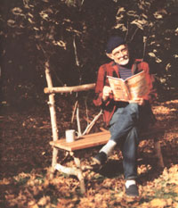 The author enjoys some early winter sun on the rustic bench he built from white birch, wild cherry, and sapling. |
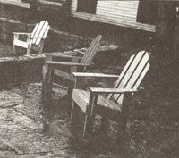 COURTESY OF HARRY N. ABRAMS, INC., PUBLISHERS |
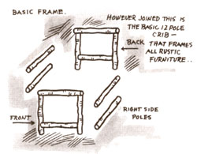 Bench ends are laid out as mirror images on a grid. Half-lap joints are notched with a bow saw, making all square, level, and plumb. |
|
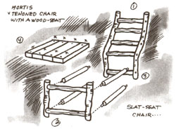 Rails and braces are power-screwed to each end and redwood seat slats are carefully nailed on. |
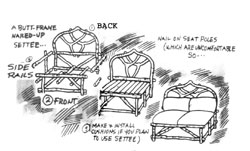 |
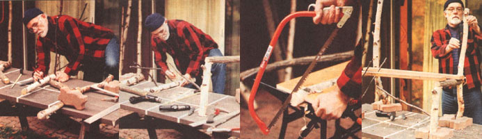 |
|
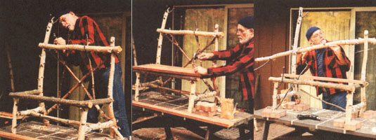 |
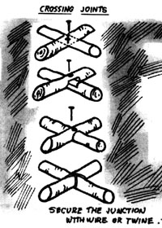 |
 |
|
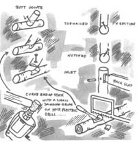 |
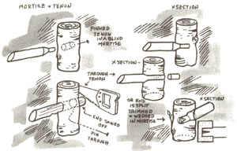 |
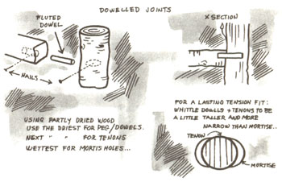 |
|
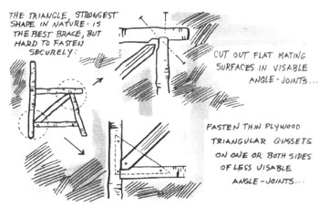 |
|
|